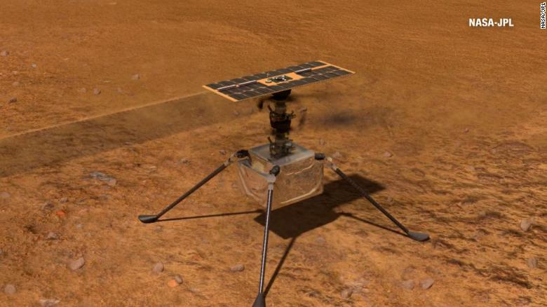

he Mars Perseverance rover gained a new traveling companion when a rock hopped into its wheel
four months ago while it explored Jezero Crater.
he Mars Perseverance rover gained a new traveling companion when a rock hopped into its wheel
four months ago while it explored Jezero Crater.
A rock found its way into the rover's left front wheel in early February while roaming around the red planet, according to Perseverance's left hazard avoidance camera. four months, the rock has traveled more than 5.3 miles (8.5 kilometers) across the rugged terrain. It joined the mission during the campaign to explore Jezero Crater, the site of an ancient lake and river delta, in which NASA scientists surveyed rocks from a formation the team refers to as "Máaz." The rock accompanied Perseverance north to the Octavia E. Butler landing site before turning west to the remains of a delta the scientists call "Kodiak," then onward to the western Jezero delta.
Scientists release first analysis of rocks
The Mars rover's current focus is drilling cores and examing the sedimentary rocks around the delta area. These rocks were created billions of years ago when there was water in the area, according to NASA. Tumbling about in the rover's wheel, Perseverance's pet rock is not hurting operations, and it remains to be seen how long the robotic explorer's new friend will stick around. If the pet rock falls out and says goodbye to the rover, it will be far from home, surrounded by strange, unfamiliar rocks.
 The Perseverance rover made friends with a pet rock about four months ago, and the two have been inseparable ever since.Perseverance isn't the first Mars rover to adopt a pet rock. The Spirit rover, which was active from 2004 to 2010, had a potato-size rock lodged in its right rear wheel early on in its journey. The stone stalled the wheel, so NASA scientists had to dislodge it. The Curiosity rover was no stranger to hitchhiking rocks and had multiple stones take a ride in its front right wheel for weeks at a time. The rover began roaming the red planet in mid-2012 and is still operational.